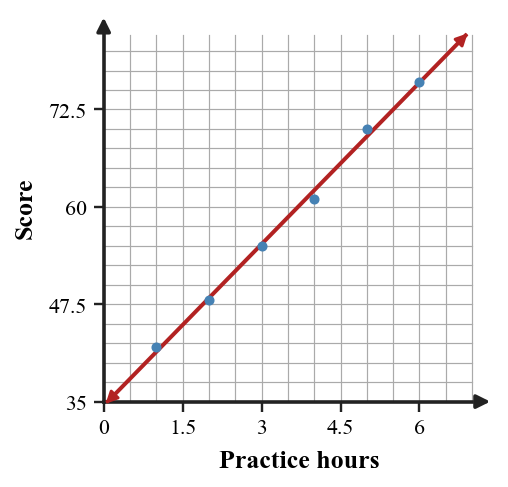
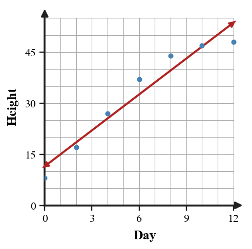

Modeling Investigation
Mathematical idea: A useful model matches the data pattern and stays reasonable for the context and domain.
Today you will identify variables, plot and interpret data, choose reasonable models, and critique model limits. You will focus on evidence from the situation and the data rather than on a single calculation.
Learning Target
Learning Target: Students will create and analyze mathematical models using real-world data.
I can statements
- I can formulate a mathematical model from real-world data and state the assumptions used.
- I can extend a model to make predictions within a reasonable domain.
- I can critique how well a model fits data, constraints, and the situation being studied.
What's To Come
This is a long-range preview for future lessons. Do not solve it today. Instead, annotate it individually. Circle anything familiar, underline symbols or directions that seem important, and write notes about what information you think will be needed later.
As you annotate, ask yourself: What parts (words, symbols, graphs) do you KNOW? What parts look FAMILIAR? What parts look like jibberish?
Use the attendance scatterplot to synthesize a short modeling response: choose a likely family, state one assumption, and predict whether attendance will keep rising above $95$ F.

Intro
Directions
Read the introduction aloud with a partner or in a small group. As you read, annotate the text by highlighting important ideas, circling key vocabulary, and writing short notes about connections, questions, or predictions in the margins.
A modeling investigation begins by naming the quantities. The independent variable is the input we choose or measure first, and the dependent variable is the output that responds. Clear variable choices make the graph and equation easier to interpret.
A data table lists values, but a scatterplot shows the overall pattern at a glance. It can show positive or negative association, clustering, curvature, and points that do not fit the trend. Those visual clues help us choose and critique a model.
A model can be useful without being perfect for every possible input. Early data may follow a line while later data levels off because of a limit in the real situation. That means the model's domain and assumptions matter.
Tables, scatterplots, equations, and written interpretations all support a modeling decision. A strong response names the model family and gives evidence from at least one representation.
Predictions should stay within a reasonable domain when possible. A prediction far outside the observed data may be less reliable, especially if the situation has a maximum, minimum, or resource limit.
Stop and Discuss
- What is the difference between an independent and dependent variable?
- What does a scatterplot help you see?
- Why can a model fit early data but fail later?
A model connects an input quantity to an output quantity.
| Quantity | Role | Question it answers |
|---|---|---|
| Practice hours | Independent variable | What value is chosen or measured first? |
| Quiz score | Dependent variable | What value changes in response? |
Context: The input is hours of practice, and the output is the score predicted by the model.
Example 1: Identify variables
A coach records each player's minutes of free-throw practice and the number of free throws made in a final round.
- Identify the independent variable.
- Identify the dependent variable.
- Explain why the variable roles make sense in this situation.
You Try It 1: Name input and output
A student records the outside temperature and the number of water bottles sold at a concession stand.
- Identify the independent variable.
- Identify the dependent variable.
- Explain why the variable roles make sense.
Stop and Discuss
- Why do the axis choices matter before graphing data?
A scatterplot helps you see association, trend, and unusual points before choosing a model.
| Practice hours | $1$ | $2$ | $3$ | $4$ | $5$ | $6$ |
|---|---|---|---|---|---|---|
| Score | $42$ | $48$ | $55$ | $61$ | $70$ | $76$ |

Context: The positive association suggests higher practice time is connected with higher scores in this data set.
Example 2: Plot and describe association
The table shows hours of sleep and reaction time for a small study group.
| Sleep hours | $4$ | $5$ | $6$ | $7$ | $8$ | $9$ |
|---|---|---|---|---|---|---|
| Reaction time | $0.42$ | $0.39$ | $0.35$ | $0.32$ | $0.30$ | $0.29$ |
- Describe which variable should go on the horizontal axis.
- Sketch the scatterplot in the workspace.
- Describe the association in words.
You Try It 2: Describe a scatterplot trend
The table shows minutes spent studying and number of errors on a practice quiz.
| Study minutes | $10$ | $20$ | $30$ | $40$ | $50$ |
|---|---|---|---|---|---|
| Errors | $12$ | $9$ | $7$ | $5$ | $4$ |
- Describe which variable should go on the horizontal axis.
- Sketch the scatterplot in the workspace.
- Describe the association in words.
Stop and Discuss
- What did the scatterplot reveal that a single data pair would not?
Example 3: Choose between two model ideas
A science group measures the radius of a circular spill and the approximate area covered.
| Radius | $1$ | $2$ | $3$ | $4$ |
|---|---|---|---|---|
| Area | $3$ | $13$ | $28$ | $50$ |
- Compare whether the area is closer to proportional to radius or radius squared.
- Choose the stronger model idea.
- Explain your choice using the context of area.
You Try It 3: Use structure to choose a model
A class measures side length and area for several squares.
| Side length | $2$ | $3$ | $4$ | $5$ |
|---|---|---|---|---|
| Area | $4$ | $9$ | $16$ | $25$ |
- Decide whether area is proportional to side length or side length squared.
- Choose the stronger model idea.
- Explain your choice using the context of area.
Stop and Discuss
- How did the context help you choose between the two model ideas?
A model can match part of the data and still fail when the situation changes.
$$P=8+4d$$| Day | $0$ | $2$ | $4$ | $6$ | $8$ | $10$ | $12$ |
|---|---|---|---|---|---|---|---|
| Height | $8$ | $17$ | $27$ | $37$ | $44$ | $47$ | $48$ |

Context: If plant height levels off, a line may overpredict later growth.
Example 4: Critique a model beyond its domain
A plant model gives $H=12+5d$ for height in centimeters after $d$ days. After day $12$, the actual plant height begins to level off near $80$ cm.
- Use the model to predict the height on day $10$.
- Explain why the model might fit early data.
- Analyze why the model may fail later.
You Try It 4: Explain a weak long-term prediction
A phone battery model gives $B=100-8h$ for battery percent after $h$ hours. The phone turns off at $0$ percent.
- Use the model to predict the battery percent after $6$ hours.
- Explain why the model may fit part of the data.
- Analyze why the model cannot be used for every value of $h$.
Stop and Discuss
- What assumption does a long-term prediction make?
Summary
In this section, you practiced modeling with data by using evidence instead of guessing.
Strong work connects at least two representations, such as a table and equation, a graph and context, or a feature and a model family.
The most common error is trusting a surface clue without checking the mathematical pattern or feature.
Strong understanding means you can explain why a model, transformation, solution, or strategy fits the situation.
Common Mistakes
- Switching variables. Why it is tempting: both quantities are in the table. What to check instead: ask which quantity is the input.
- Overtrusting one point. Why it is tempting: a single point is easy to fit. What to check instead: use the full scatterplot pattern.
- Assuming linear forever. Why it is tempting: a line is simple. What to check instead: check real-world limits and domain.
- Ignoring outliers. Why it is tempting: most points show a trend. What to check instead: notice points that do not fit.
- Predicting too far. Why it is tempting: substitution is quick. What to check instead: consider whether extrapolation is reasonable.
Optional Future Task Reflection
Look back at the future task. Do not solve it yet. Highlight one part that makes more sense now than it did at the beginning. Circle one part that still feels unfamiliar. Write one sentence about what representation you would look at first.
In a data table comparing study time and quiz score, identify the independent variable and dependent variable.
The table gives cardboard area and cereal weight. Make a scatterplot on the given axes and describe the association.
| Cardboard area | $34$ | $150$ | $218$ | $325$ | $357$ | $471$ |
|---|---|---|---|---|---|---|
| Weight | $21$ | $198$ | $283$ | $567$ | $680$ | $1020$ |

What is one idea about modeling with data you understand better now than at the start of class? Write at least one complete sentence.
What is one thing about modeling with data you still want to understand or practice? Be specific — name the idea, not just "everything."